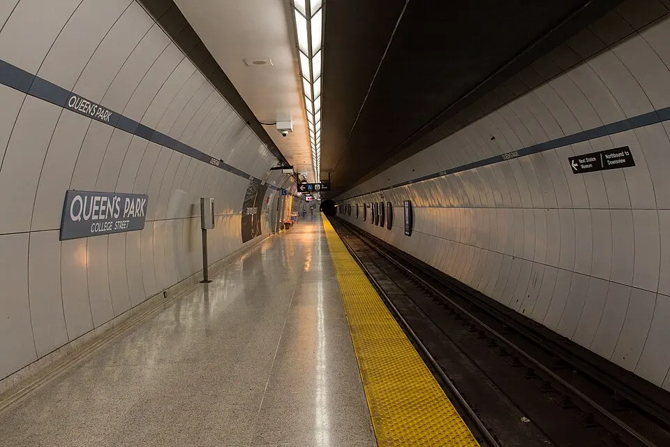

Signal
SignalStation atlas / Queen’s Park
Station history
Queen’s Park


Station history
Trains began serving the Ontario legislature and hospital district. Engineers tunnelled this stretch to limit disturbance above ground.
The MaRS Centre entrance opened, linking the station to the research complex at College Street and University Avenue.